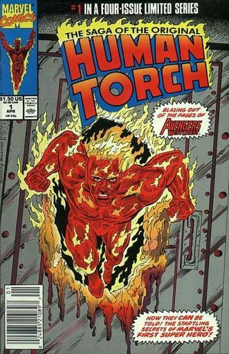

Marvel Comics
Marvel Comics é uma editora americana de histórias em quadrinhos. fundada no começo da década de 1930 por Martin Goodman, a Marvel Comics foi originalmente chamada de Timely Comics. Seu fundador era editor de revistas que faziam sucesso com histórias de faroeste. Visionário, Martin Goodman expandiu seu trabalho no sentido de um mercado muito promissor. Com a sede estabelecida em Nova York, Goodman detinha o poder na editora, acumulando diversos cargos. A primeira publicação só aconteceria em 1939 através de uma revista chamada Marvel Comics que mostrou pela primeira vez ao público os personagens Tocha Humana e Namor. A publicação foi um sucesso de vendas e estimulou a equipe responsável a lançar a segunda edição no ano seguinte, mas com o nome de Marvel Mystery Comics.
Na década de 1940, Jack Kirby e Joe Simon formaram a dupla da ainda Timely Comics que daria origem ao primeiro herói patriota, o Capitão América. Sua primeira aparição foi em março de 1941 e fez circular quase um milhão de exemplares. O patriotismo sempre foi um elemento muito forte na cultura estadunidense e o momento de guerra vivido no mundo favoreceu à editora que soube atingir o ponto fundamental para tornar as histórias em quadrinho uma febre nos Estados Unidos.

Todavia, da mesma forma como a guerra favoreceu às vendas sobre histórias de heróis, o fim do conflito fez cair significativamente esse tipo de roteiro. Para manter-se ativa, a Timely Comics expandiu-se pelos mais diversos gêneros. Os anos 1950 foram complicados para a Timely Comics e as outras editoras do ramo. Martin Goodman passou a publicar com o nome de Atlas e tentou ressuscitar alguns heróis da década de 1940, mas não obteve sucesso. Foi graças ao sucesso que a DC Comics obteve com suas histórias de super-heróis no final da década de 1950 e início da década de 1960 que a Marvel Comics se recuperou no gênero. Nesta época, Jack Kirby e Stan Lee foram responsáveis pela criação do Quarteto Fantástico.
O sucesso foi tão grande que estimulou a criação de outros heróis na mesma década, com destaque para o Homem-Aranha, de Stan Lee e Steve Ditko, o personagem mais bem-sucedido da história da Marvel.
A Marvel Comics tornou-se diferenciada no mercada de editoras de histórias em quadrinhos por apresentar histórias mais próximas da realidade, seus personagens eram muito originais, diferenciados e bem trabalhados. Stan Lee foi um dos roteiristas que mais se destacou na história da Marvel Comics, o que lhe rendeu o posto de diretor da empresa por longos anos.
A Marvel Comics entrou na década de 1970 com mais um período de baixa no mercado, mas se recuperou ao final dela. Nos anos 1980 houve novo renascimento criativo que aumentou a venda dos gibis. A empresa passou a investir em diferentes mídias quando comprou o estúdio de animação de Friz Freleng, responsável pela Pantera Cor de Rosa, e gerou desenhos animados de sucesso como G.I. Joe, Transformers e Muppet Babies.
Uma grande reviravolta aconteceu em 1988, pois a Marvel Comics foi comprada pelo empresário Ronald Parelman. Ele colocou a empresa na Bolsa de Nova York e aumentou o número de títulos publicados. Só que a empresa vendeu seu estúdio de desenhos animados e passou a contratar empresas para realizar seus projetos. A Marvel Comics entraria na década de 1990 com um grande sucesso consequência de um significativo aumento na venda de história em quadrinhos nos Estados Unidos. Só que a empresa passaria por uma grave crise financeira que envolvia diretamente o nome de Ronald Parelman, acusado de desviar o dinheiro todo da Marvel para seus próprios interesses. Isaac Perlmutter assumiu a empresa em 1997, no auge da crise, e junto com seu sócio, Avi Arad, reergueu a Marvel e licenciou alguns dos heróis para estrelarem nos cinemas em filmes de sucesso.
Após muitas décadas e a grande crise dos anos 1990, a Marvel Comics firmou-se como a principal editora de histórias em quadrinho dos Estados Unidos. Atualmente, a principal concorrente é a D.C. Comics, mas esta está muito abaixo da Marvel em número de vendas. A Marvel Comics gerou um mito da cultura popular, Stan Lee. Ele não está mais ligado oficialmente à empresa, mas, recorrentemente, assina algumas edições especiais. No século XXI, a Marvel Comics criou também uma linha editorial para adolescentes mais velhos, a Marvel Knights, e uma para adultos, a MAX. A empresa cresceu substancialmente com a parceria estabelecida com Holywood. Até que, em 2009, a Marvel Entertainment foi comprada pela Walt Disney Company por quatro bilhões de dólares. O catálogo da Marvel possui cerca de cinco mil personagens, sendo que entre os mais famosos estão, Hulk, Homem-Aranha, Capitão América, O Justiceiro, Demolidor, Thor, Homem de Ferro, Blade, Motoqueiro Fantasma, o Quarteto Fantástico e os X-Men.
Fonte: http://marvel.com